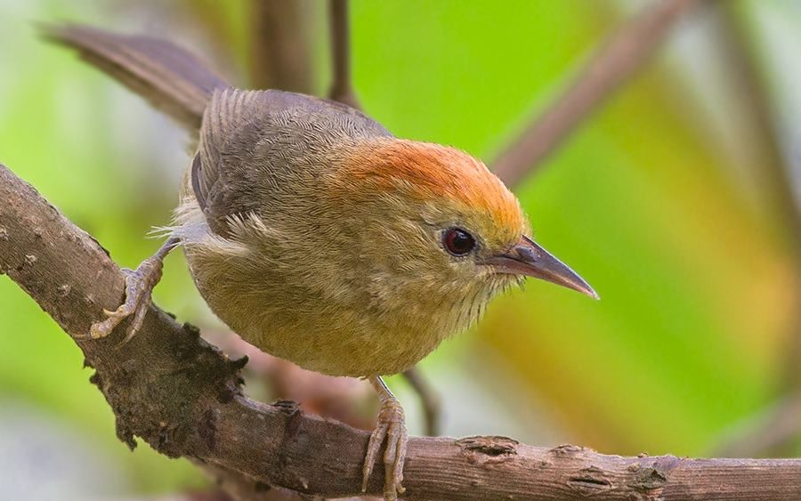

Things to Do
From dawn bird calls in ancient oak forests to watching the Milky Way rise over Kanchenjunga — Padamchen rewards every kind of traveller

BIRD PHOTO
Bird Watching in Padamchen's Forests
Padamchen is quite literally a bird-watchers' paradise. The dense temperate forests of oak, maple and rhododendron shelter Laughing Thrushes, Fulvettas, Steppe Eagles, Honey Buzzards, Wrens, Tits, Sunbirds and many more. On lucky mornings, watch for the spectacular Himalayan Monal pheasant. The forest is also home to butterflies in remarkable variety — bring a macro lens. Wake up early, step outside and let the forest do the rest.

Walk the Original Silk Route Trail
Right from our doorstep, short forest trails wind through the thick virgin temperate forest of Padamchen. These are the very paths that ancient traders once rode on horseback between India and Tibet — part of the legendary Old Silk Route. The forest is alive with birdsong, dappled light, and surprising wildflowers. Ask us to point you to the trail head and set off at your own pace. Deeper regions of the forest have occasional sightings of Himalayan Black Bear and Red Panda.

Sunrise over Kanchenjunga — Thambi View Point
One of the most iconic experiences on the Silk Route. Set out before dawn to reach Thambi View Point at 11,200 ft, where the first rays of the sun set the snow-covered peaks of Mt. Kanchenjunga on fire in shades of gold and crimson. On clear mornings, the panorama is completely breathtaking and utterly unforgettable. We'll wake you up, pack hot thermos tea, and arrange a vehicle. This single morning can define your entire trip.

Stargazing & Night Sky at 8,000 ft
Far from any city light pollution, the night skies above Padamchen are extraordinary. On clear nights you can see the entire sweep of the Milky Way, and on a good night the mountain silhouettes of the Kanchenjunga range are visible even under starlight. Wrap up in blankets, light the bonfire, sip some local tongba and spend an hour looking up. We can point out the constellations and tell you the mountain stories that go with them.

Kuikhola Waterfall
A beautiful waterfall just a few minutes' drive from Padamchen — perfect for a casual morning or afternoon outing. The falls are especially spectacular post-monsoon when the water levels are at their highest and the surrounding forest is deepest green. A gentle trail leads to the base of the falls. Bring your camera, let the kids splash around, and breathe in the cool mist.

Silk Route Village Life & Local Culture
Padamchen village is home to warm Lepcha and Bhutia communities whose culture is deeply rooted in the Himalayan Buddhist tradition. Simply walking through the village — watching daily life, noticing the prayer flags strung between houses, hearing the sounds of the forest — is an experience in itself. Our hosts can introduce you to local families, explain the significance of the Losar (Tibetan New Year) festival, and share stories of life on the Silk Route. Local cuisine — thukpa, momos, gundruk, aloo dum — is served right at the homestay.